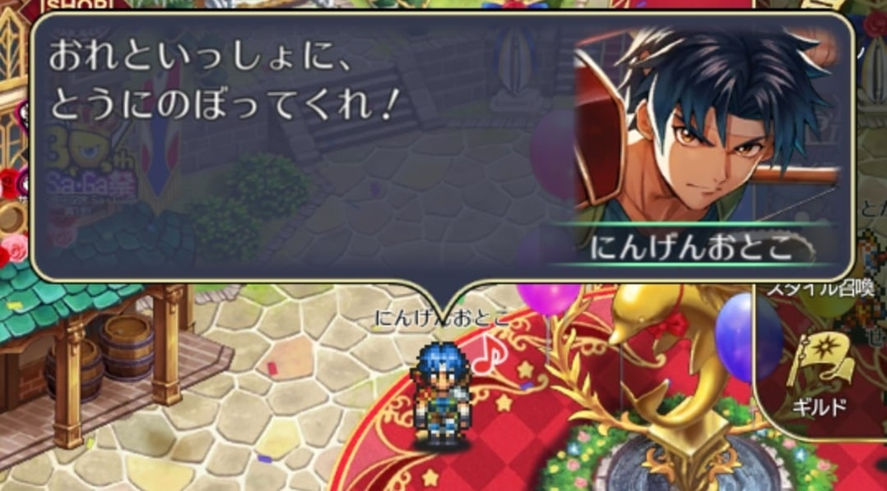
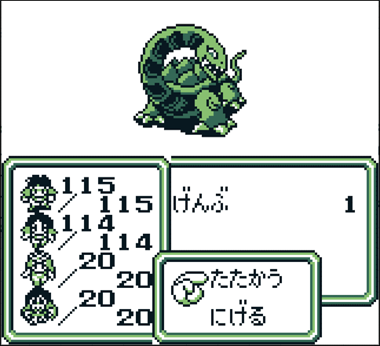
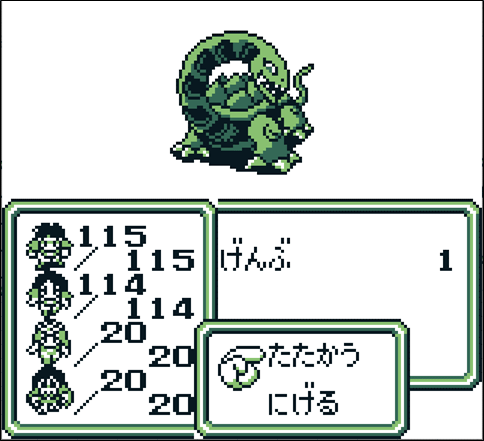
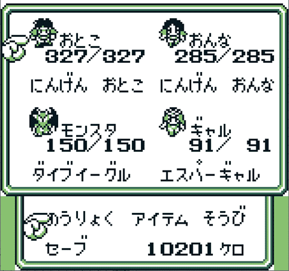
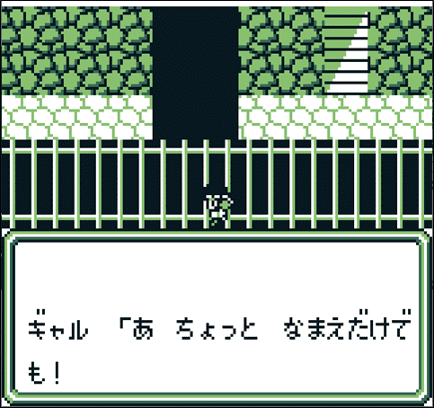
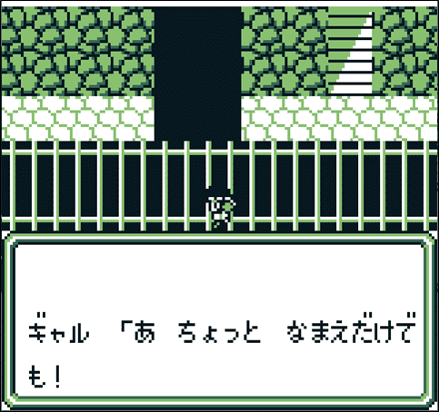
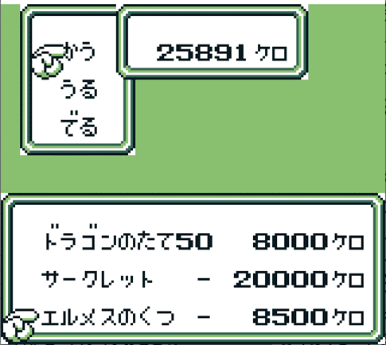
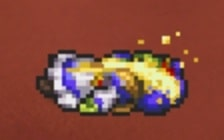

魔界塔士Sa・Ga
ホーム > ＧＢサガ > サガ30周年記念イベント > 魔界塔士Sa・Ga編
ここではゲームボーイ（以下GB）版の魔界塔士Sa・Gaと、ロマサガRSで出てきたネタを紐づけていきたいと思います。
魔界塔士Sa・Gaの大まかな話の流れを追いかけつつ、ロマサガRSでもこんな感じで扱われてたよねー、という形で紹介していきます。
魔界塔士Sa・Gaのネタバレを多分に含むため、ネタバレを見たくない方はここから先を見る前にブラウザの戻るボタンで戻るか、✖ボタンでブラウザを閉じてください。
魔界塔士Sa・Gaの世界観
GBを起動してまず目にするのがこの画面。
この画面で流れていた音楽が、ロマサガRSを起動したときのこの音楽です。
※すいません。動画編集技術がいまいちで、動画のサイズ調整が全体的にうまくいきません。スマホで見ている方は特にきついと思いますが、全画面表示ならなんとか見れると思います。
「はじめから」を選択すると冒険開始。
最初に出てくる画面がこれです。

楽園を目指してひたすら塔を上るというものです。
これを踏まえると、にんげんおとこ、にんげんおんながホーム画面で言っていた事の意味が分かると思います。
楽園を目指して塔の最上階に一緒に行こう！と言っています。

次の画面はキャラクタ選択画面。この中から主人公一人と仲間三人の合計四人を選択します。
ロマサガRSのガチャ第一弾のにんげんおとこ、にんげんおんな、エスパーギャルはこの中から選ばれたキャラです。

にんげんおとこ、にんげんおんなは8個アイテムを所持できます。ここに武器や防具などを装備させていきます。

エスパーギャルも枠としては8個あるのですが、そのうち4個は「-」になっています。
ここはエスパーギャルの特徴で、この枠にランダムでにんげんには使用できない能力を覚えていきます。
「-」となっているところにはアイテムを持たせることができないため、にんげんと比べてアイテムを持てる数が少なくなっています。

なので、ロマサガRSのエスパーギャルがホーム画面で言っているこのセリフは、この所持枠が少ないことを言っています。
モンスターを選択することもできます。魔界塔士Sa・Gaでは、敵と戦闘した後、敵がたまに肉を落とします。
モンスターは、この肉を食べることで別のモンスターに変身することができます。
これはロマサガRSのせんせいの技：イートザミートと関係しているのですが、せんせいはSaGa2 秘宝伝説のキャラなのでそれについてはSaGa2の記事で触れます。
第一世界（げんぶ）
魔界塔士Sa・Gaは大きく四つの世界があって、各世界のボスを倒したら次の世界に行くという形で物語が進んでいきます。
まずは第一世界。この世界のボスはげんぶです。最初の町で人に話しかけていると、何やら重要そうなヒントをくれる人がいます。
他の人のヒントも聞くと、どうやらこの世界にはよろいのおう、つるぎのおう、たてのおうの三人の王がいるらしい。
まずよろいのおうに会いに行くと、恋の悩みを打ち明けられますｗ
相手は南の村の村一番の美人だということで行ってみます。この人（？）らしい。

原作では、むら１ばんのびじんと、普通の村人との違いは私にはわかりませんでしたｗｗ
（下の画像は普通の村人）
このむら１ばんのびじんは、期間限定イベント：黒と白の塔でも出てきましたね。
下の画像が、黒と白の塔に出てきた「むら１ばんのびじん」。一応他のスライムよりも美人っぽく書かれているます（まつげが長い）。。
まあとにかくこのむら１ばんのびじんは盗賊に脅されているとのことなので、盗賊を退治しに行きます。
これ、にんげんおとこのガチャ演出に採用された場面です。

まあ、盗賊と言いつつ、どくがえるなのですが、、、

第一世界でネタになっていたのはこれぐらいです。
あとは1Fのボスであるげんぶの画像を紹介して1Fは終わろうと思います。
 


第二世界（せいりゅう）
次は第二世界。この世界のボスはせいりゅうです。
第二世界の入口の前に、第一世界でヒントをくれた人がまたいて、再度ヒントをくれます。
この人が言う「老人」というのは、ローディング画面にもなっていたこの人です。
第二世界で重要アイテムをゲットするためには、このなぞなぞに答える必要があります。
出題されるなぞなぞは三種類あって、画像はその内の一つです。
画像の答えはきんのはり。FFでもお馴染みで、せきか状態を回復するアイテムです。
・・・針治療とかそういうことですかね・・・？
他の二つの問題は以下の通り。
| 問題 | 答え |
|---|---|
|
ロングソ－ド２ほんと ゴールドかぶと３つと ポ－ション４こで なにがかえる？ |
せいりゅうとう |
|
うみにちかいと ちいさくて やまにちかいと おおきいもの なんだ？ |
いわ |
制圧戦のドロップ報酬で「うみのいわ」っていうアイテムと「やまのいわ」っていうアイテムがありますが、
これ、うみのいわは小さい岩がたくさんある画像になっていて、やまのいわは大きい岩一つの画像になっています。
このなぞなぞがあるからこんなアイテムをドロップしたんですね。
第二世界では、にんげんおんながつかう「とびひざげり」をお店で買うことができます。
Sa・Gaの世界ではとびひざげりはおろか、パンチやキックもお店で買って使うものなんです！（笑）
第二世界でネタになっていたのはこれぐらいです。
あとは第二世界のボスであるせいりゅうの画像を紹介して第二世界は終わろうと思います。

第三世界（びゃっこ）
次は第三世界。この世界のボスはびゃっこです。
この世界でもこの人がヒントをくれます。
第三世界の最初の町でびゃっこの手下と戦って勝つと、びゃっこ城に案内されて、びゃっことの会話が始まります。
ジャンヌという女性を探すことになります。

ジャンヌを発見しますが、先客がいます。
これがローディング画面の場面です（もう一歩下で話しかければ全く同じ絵になりますね）。


ってか、おとこ、「おい ギャル ！」って、女性に聞くことかこれ？ｗ
・・・魔界塔士Sa・Gaでは、このような会話は隊列の順番で会話の相手が決まる仕様になっています。
この会話の場合は、隊列の１番目のキャラが４番目のキャラに話しかける仕様になっています。
今回は以下の隊列でイベントを発生させました。

このため、隊列の順番を入れ替えることで会話の相手を変えることが可能です。
隊列２
変更後の会話

隊列３

変更後の会話

ジャンヌを助けると、妹のミレイユを助てくれとお願いされます。

知っている人も多いかもしれませんが、この妹のミレイユという女性はスクウェア三大悪女！
・・・として扱うのは微妙かもしれませんが、三大とは言わないまでも悪女として扱われている女性です。
以下の画面はミレイユを助けようとしている画面です。

これはロマサガRSのにんげんおんなのガチャ演出にもなった場面です。
助けた後の会話がこちら。


うーん、流石悪女。。。
この後、ぶち込まれた牢獄を脱出してなんやかんやあってびゃっこと戦う直前の場面がこれ。


これ、ローディング画面にもなっていた場面ですね。
びゃっことの戦いの後、ジャンヌはクリスタル（重要アイテム）を残して消えてしまいます。

この辺のやり取りは、ロマサガRSの「神のゲームと黒と白の塔」でも出てきましたね。
その後、ジャンヌは消えてしまうのですが、その時のミレイユのセリフがこれ。


あ、はいっ・・・
いや、まあこれは姉が消えてしまったことがショックだったので、一人にしてほしかったんでしょう。。
ちなみに、サガシリーズで定番となっている「涙を拭いて」が初めて流れたのはこの場面です。
第三世界でネタになっていたのはこれぐらいです。
あとは第三世界のボスであるびゃっこの画像を紹介して第三世界は終わろうと思います。


第四世界（すざく）
次は第四世界。この世界のボスはすざくです。
この世界でもこの人がヒントをくれます。
この世界では、フィールド（地上）を歩いているとボスであるすざくと遭遇します。
しかし、このすざくはバリアに守られているため、ダメージを与えることが（ほぼ）できません。
このため、地上ですざくと遭遇した場合はにげるしかありません。


仕方なく地下を歩きながら町を探していると、女性がモンスターに襲われているため、助けます。

助けると、この先に町があることだけを伝えてどこかに行ってしまいます。
 

町につきました。どうやら酒場はゾク（族？暴走族？）のたまり場らしいです。これは酒場に行けというフラグですね。
酒場の前にはバイクがありますが、まだ乗れません。
酒場に入ると、総長と呼ばれている人にタイマンを吹っ掛けられますが、先ほどの女性が現れて止めてくれます。

どうやら総長はすざくのバリアを中和する装置を作っているらしく、そのお手伝いをすることに。ついでにバイクを貸してくれるらしい。


バイクに乗れるようになります。倍速移動できます。


ロマサガRSのにんげんおんなが、なんでマッハドリフトという技でバイクを乗り回してるのかわからなかったんですけど、このバイクが元ネタなんでしょうか？
ちなみに、このバイクはお店の中でも乗ることができます（笑）
階段だって登れちゃう！ｗ

このお店ではネコのツメとサイコソードを売っています。
ネコのツメはロマサガRSでにんげんおんなが使えるあの技であり、SS武器。サイコソードはSS武器（杖）でした。


すざくのバリアを中和するために必要なアイテムの一つはアイシーボードです。

これは制圧戦の報酬にもなっていたアイテムです。
・・・あれ？アイシーボードじゃないじゃん。アイシーチップじゃん。・・・？ま、いっか。きっと元ネタはこれです。

アイシーボードを手に入れた町では、にんげんおとこの技になっている「はどうほう」を売ってるお店があります。
3,100,000ケロ（ケロはお金の単位）に見え、所持できる金額を超えているように見えますが、3は使用回数なので金額は100,000ケロですｗ
アイシーボードを手に入れてから総長に話しかけると総長が凄いことを言います。。。。

ブツがある場所の前。バリアが張られていて扉までたどり着けません。するとそこに総長が現れ、体当たりで強引にバリアを破壊していきます。


これがローディング画面で採用されていた場面です。
そしてこれでゾクのはちまきを手に入れることができます。

お分かりかと思いますが、ロマサガRSのイベントで入手したアイテムです。
ブツをゲットして、すざく用バリア消去装置イレイサー99を手に入れます。


シンニュウシャアリという警報とともにデスマシーンが現れます。

ロマサガRSの制圧戦でもデスマシーンという敵が出てきましたが、微妙に違います。
ロマサガRSのデスマシーンには「２」って書いてあるのでこれはSa・Ga2 秘宝伝説のデスマシーンです。・・いや、ホントデスヨ？ｗほら！
（Sa・Ga2のデスマシーン）

こうして手に入れたイレイサー99を使うことですざくのバリアを中和することができるため、すざくとまともに戦えます。
アイシーボード、本当に必要だったのかな・・・？


第四世界でネタになっていたのはこれぐらいです。
あとは第四世界のボスであるすざくの画像を紹介して第四世界は終わろうと思います。
アシュラ
すざくを倒したら次はアシュラです。アシュラはこれまでのボスとは違い、イベントをこなして遭遇するようなボスではなく、塔の23階に行くと待ち構えていて、そのまま戦闘になります。
道中、なかなか印象に残る小イベントがあり、ロマサガRSでもネタにされているのでそれをご紹介したいと思います。
まずは19階です。
19階に画像のような場所があり、中に入ると人が倒れています。
右下にある階段を降りるとまた別の人が倒れています。
話しかける、、、前に一度おもむろにアイテム欄を確認します。一つ所持枠が開いていますね。
この後倒れている人に話しかけると、落ちている手帳を読むことができます。
これがローディング画面で採用されていた場面です。
ちなみにこの後アイテムを開くと凄いものが手に入っています。いや、なんで！？手帳に挟まってたの！？ｗ
次は20階。本棚がたくさんある部屋にたどり着きました。何か記録されていますね。

この記録は、これまで最上階を目指した冒険者たちが何階のどの場所までたどり着いたのかを記録したものです（なんかリズって名前の人いるけど・・・）。
これがエスパーギャルのガチャ演出に採用された場面です。
ちなみにこの部屋には一か所隠し部屋があって、エスパーギャルの得意技である「フレアのしょ」を手に入れることができます。
次は21階。お花畑が広がる世界があり、小さい家があります。
話しかけてみます。
これがローディング画面で採用されていた場面です。
21階の別の場所では「ガラスのつるぎ」という武器を手に入れることができます。
このアイテムは、一回しか使えない代わりに、高威力の武器でした。
にんげんおんなの技「エースインザグラス」の３連続攻撃の一番最後、剣で攻撃して砕け散っていますが、これがガラスのつるぎです。
（エースインザグラスは44マグナム→ネコのツメ→ガラスのつるぎの連続攻撃らしい。特に紹介しなかったですが、44マグナムも魔界塔士Sa・Gaで出てくる武器です。）
全然話違うんですけど、ここまで来る途中、エスパーギャルが「あくしゅう」を覚えました。
エスパーギャルが「早く忘れたい！」って言っていたあれです。
この「あくしゅう」は、敵に使うとなぜかちからが下がります。なんで・・？ｗ
22階まで来るとまたこの人がいます。
そして23階。アシュラがいます。アシュラは四天王を生み出した敵です。
少し会話した後、戦闘になります。
アシュラはロマサガRSでも使ってきた３つのあたま、６ぽんのうででの攻撃に加えて、ヒーリングで回復もします。
ロマサガRSでは使ってこなかったですが、フレアも使ってきます。
ロマサガRSのアシュラはこんな感じでした。どっちにしろ腕が６本あるようには見えないですね・・・。
アシュラを倒して先に進もうとすると落とし穴があって落ちてしまいます。

Sスタイルのにんげんおんなが詳細で「落とされてもまた登る」と言っているのは、アシュラを倒した後におとしあなで1階まで落とされても、また塔を登っていったからです。
「一番上に嫌な奴が待ってるのも経験済み。」って言っていますね。はい。いるんです。嫌な奴が。。。
真の塔
落とし穴に落ちた後は1階に戻されます。今まで各階で会ったキャラクター達がいます。
例の男もいますね。一体何者なんでしょうか・・・。
お店で売っているアイテムも新しくなっていて、ビームライフル、エルメスのくつが売っています。

ロマサガRSで出てきたSS武器、防具ですね。
再び塔を登っていきます。途中、げんじのこてをゲットできます。
これもロマサガRSで出てきたSS防具ですね。
再び塔を登っていき、最上階にたどり着くと、謎の部屋にたどり着きます。

ゲームスタート時の画面には、塔が楽園に通じているとあります。これが、、、楽園？
部屋を探索すると、例の男がいます。話しかけてみましょう。
Sスタイルのにんげんおんなが言っていた「一番上に嫌な奴が待ってるのも経験済み。」はまさにこのかみのことです。本当に嫌な奴！
私がこのゲームをプレイしたのは子供の頃なんですけど、この会話は本当に印象に残りました。
思えば私のサガ好きはここから始まっていたのかもしれない。
ロマサガRSのイベント：黒と白の塔で「シルクハットの男」の正体がかみだったという演出がありますが、これは当然、魔界塔士Sa・Gaの中でヒントをくれていたこの人がシルクハットの男であり、その正体はかみだったという演出を踏襲したものです。
他にも、かみにまつわるネタはロマサガRS内に結構転がっていました。
先ほどのかみとの会話の一部分はローディング画面に採用されています。
ガチャ演出の場面やホーム画面でのセリフ（♪つきかみタップ時）、S, SSスタイル詳細画面のかみのセリフはこのかみとの会話が元ネタになっています。
また、制圧戦でかみが出現した場所。「楽園」ってなっていますね。魔界塔士Sa・Gaでかみがいたのは塔の最上階。つまり楽園です。
GBのかみが使ってくる技は、ふっかつ、かみのみぎて、かみのひだりて、ひかりあれ（暗闇付与）、くいあらためよ（混乱付与）です。
これらとフレアです（しいて言うなら「なにもしない」というものがあります）。
エフェクト全然違いますが、せっかくなので制圧戦でかみが使った技の動画を張っておきます。
ここではあえてふっかつにスポットを当てます。この技、ロマサガRSではマイルドな技になっていますが、原作では結構な鬼畜技でした。
これ、HPが全回復する技だったんですよ。DQ2のシドーのベホマ並みの恐怖感がありました。
しかも残りHPが少なくなってくると使用してくるため、「あと少しで倒せる！」って思っているとふっかつで全回復してきます。
頑張ってかみを倒すと、かみが真っ二つに割れていきます。
たまに誤解されている方がいらっしゃいますが、見ての通り、チェーンソーで倒さなくても真っ二つに割れます！
あまりにも有名だと思いますが一応解説すると、魔界塔士Sa・Gaのラスボスである、かみはチェーンソーで一発で倒すことができます。
チェーンソーという武器はもともと相手を確率で一撃で倒すことのできる武器です。本来であれば、使用者の力が高く、相手の防御力が低いほど成功率が高いのですが、
設定ミスで、使用者の力が高く、相手の防御力が高いほど成功率が高くなってしまっているらしいです（聞いた話でしかないですが）。
ラスボスであるかみは作中最も防御力が高いため、ほぼ確実にチェーンソーでの攻撃が成功します。
チェーンソーでの攻撃が成功すると、「【相手の名前】は バラバラになった」と表示されます。相手がすざくなら「すざくは バラバラになった」だしアシュラなら「アシュラは バラバラになった」です。
かみも同様です。違うのは倒したときの演出。先の画像の通り、真っ二つに分かれて行きます。この真っ二つに分かれる演出と、チェーンソーで倒したときの表示が重なるとこうなります。
かみは バラバラになったという表示と共に真っ二つに割れていくかみ。まるでチェーンソーでバラバラにされたかみを表現したかのように見えてしまいますね（笑）
しかししつこいですが、この真っ二つに割れるのは通常演出です。チェーンソーで倒した場合の特殊演出ではありません。
この経験がトラウマになってしまったのか、かみをホーム画面でタップするとこんなことを言います。
かみの気絶時のドットが二つに割れているのもこの辺のことを踏襲したものです。

ここまでの知識を得たうえで、2020年1月のロマサガRSの運営さんからのお便りGIFを見てみましょう。
特に、原作未プレイだった方は見え方変わってくるのではないでしょうか（ちょっとSaGa2も混じっていますが）。
にんげんおとこ、最後チェーンソー出してますね（笑）
あけましておめでとうございます🎍
— ロマンシング サガ リ・ユニバース公式 (@romasaga_rs) December 31, 2019
新年のご挨拶に年賀ドットアニメをお届けします。
サガ30周年の今年も、ロマサガRSやサガシリーズを盛り上げていけるよう運営していきますので、よろしくお願いいたします。
ゲーム内お知らせの、運営からのお便りもぜひご覧ください。#ロマサガRS#サガ30周年 pic.twitter.com/iIVKaoLSrB
エンディング
あとはエンディングです。倒した直後の主人公たちの会話がこちら。
ホーム画面でにんげんおとこをタップしたときのこのセリフは、きっと自分たちの世界に戻ってよかったという気持ちを表したものでしょう。
この記事をどうやって締めれば良いのかよくわからないのでエンディングの動画を張っておきます。
魔界塔士Sa・Gaは以上です。
もしよければSa・Ga2 秘宝伝説の記事もよろしくお願いします。
魔界塔士Sa・Ga